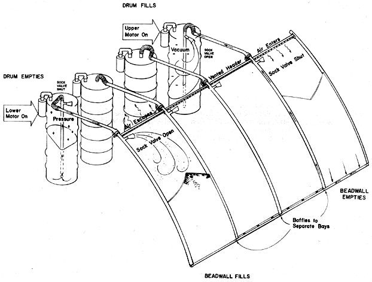

A Letter From Steve Baer
Reader offers improvements, diagrams to solar heater and drum wall plans.
By Steve Baer
September/October 1974
Dear MOTHER:
I was very pleased to see the mini-article about Zomeworks' Solar Heater and Drum Wall Plans in MOTHER NO. 28. You say such nice things about me. I hope MOTHER's readers realize that there are other talents here at Zomeworks besides mine . . . those fine sets of instructions show the skills and intelligence of Dick Henry, Jay Davis, Martha Jones, my wife Holly and the rest of our crew here in Albuquerque.
Now, the beadwall plans! I mentioned this wonderful invention of David C. Harrison's when you interviewed me last year. (See The Plowboy Interview in MOTHER NO. 22, pages 11-12. -EDITOR.) The beadwall is a kind of super curtain that allows folks to transform a clear dual-panel of glass into an opaque, well-insulated wall and back again. By a simple reversal action, it collects and retains the sun's warmth in a greenhouse or other building during cold weather and prevents heat gain on sunny days.
We've built two greenhouses utilizing the beadwall, and our test results show that it will do much of the heating and cooling required by an average office building or home. We're also pleased about the other advantages the beadwall has over the more customary means of controlling heat and light: Curtains-for instance-get dirty, fade and are poor at keeping out the cold.
Folding doors are more effective than drapes against a chill . . . but they're bulky and require free space in which to swing. Both of these conventional insulators are external and open to filth and damage. The beadwall, on the other hand, is not only a better insulator but works internally . . . and so is not subject to such problems. The new insulating wall is also superior to most doors as a weather shield since-with its unique construction-there are never any air leaks. And (this might be a minor point) I can't help but appreciate the beauty of this "curtain" as the white beads flow in and out of the clear panels.
We're now selling plans and specifications for the beadwall insulating system . . . seven pages of blueprinted diagrams and instructions. The plans offer as complete an explanation of the beadwall as we can provide, along with all the information anyone needs to build the system . . . and a detail of how to erect a greenhouse incorporating the beadwall as the insulator. Folks interested in beadwall plans can order them from Zomeworks Corporation, P.O. Box 712, Albuquerque, New Mexico 87103 for $15.00. And if they don't like the idea once they've given it the once-over, we'll be glad to buy the plans back at the full $15.00 purchase price.
Steve Baer
Albuquerque, N.M.
 |
 |
|